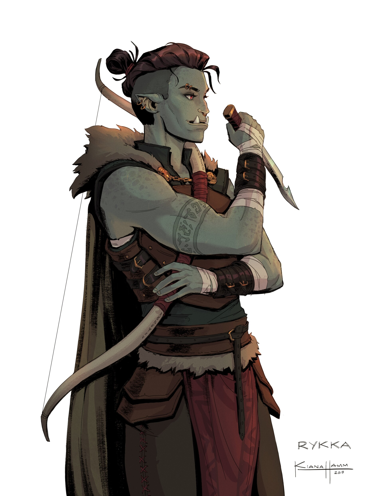

Полуорк (Half-orc)
Описание
Полуорки обоих полов имеют рост от 6 до 7 футов, мощное телосложение и сероватую или зеленоватую кожу. Их клыки часто вырастают настолько длинными, что торчат изо рта, и это, в сочетании с низким лбом и слегка заостренными ушами, делает внешность полуорка звероподобной. Внешность полуорка может быть впечатляющей, но мало кто назовет их красивыми.
Общество
В отличие от полуэльфов, неприязнь к которым отчасти проистекает из зависти, полуоркам не позавидуешь: от обеих рас они унаследовали худшее. Уступая в силе своим родичам-оркам, они вызывают в окружающих такой же страх. На полукровок частенько нападают, не видя особой разницы между ними и настоящими орками. Тем не менее в цивилизованном обществе полуорков если и не принимают полностью, то по крайней мере уважают за боевые качества. Известны случаи, когда орочьи вожаки намеренно плодили полуорков, зная, что недостаток силы те компенсируют хитростью и агрессивностью, а значит, отлично подходят на роль полководцев и военных советников.
Отношения с другими расами
<Постоянные гонения делают полуорков недоверчивыми и гневливыми, но те же, кто сумеет пробиться сквозь налет внешней грубости, могут найти в душе полуорка сочувствие и понимание. Эльфы и дварфы наименее терпимы к полуоркам, находя в них слишком много общего со своими кровными врагами. Впрочем, остальные народы в этом вопросе недалеко от них ушли. Человеческие поселения, не испытывающие проблем с орками, воспринимают полуорков лучше всего, и здесь полукровка часто может сделать карьеру наемника или стражника.
Мировоззрение и религия
Жизнь изгоя - что среди грубых орков, что в цивилизованных землях - зачастую превращает полуорка в озлобленного и жестокого одиночку. Они легко становятся злыми, хотя по натуре таковыми не являются. Мировоззрение большинства полуорков хаотичное нейтральное, так как они на своем опыте знают, что нет смысла браться за то, что не сулит выгоды лично тебе. Если они утруждают себя религией, то предпочитают божеств, связанных с войной и личным могуществом, таких как Горум, Кайден Кайлин, Ламашту или Ровагут.
Искатели приключений
Крайне независимые полуорки нередко выбирают жизнь искателей приключений по необходимости, надеясь порвать со своим тяжелым прошлым или стремясь силой вырвать у судьбы лучшую долю. Те из них, кто больше уверен в себе или отчаянно жаждет признания, избирают путь героев, чтобы доказать всему миру, чего они стоят.
Расовые особенности
+2 к значению одной характеристики. Персонаж-полуорк получает +2 к одной характеристике по выбору игрока, что отражает разностороннюю природу этого народа.
Средний размер. Полуорки - существа среднего размера, что не дает им никаких бонусов или штрафов.
Нормальная скорость. Базовая скорость полуорков - 30 футов.
Ночное зрение. Полуорки видят в темноте на 60 футов.
Устрашающий вид. Полуорки получают +2 (народ) к проверкам Запугивания благодаря своему грозному виду.
Смешанная кровь. Для любых эффектов, воздействующих на определенный народ, полуорки считаются и людьми, и орками.
Орочья свирепость. Раз в день, если ПЗ полуорка опустились ниже 0, но он не погиб, он может продолжить сражаться еще один раунд, как если бы был едва жив. К концу своего следующего хода полуорк немедленно теряет сознание и оказывается при смерти, если он не восстановил ПЗ.
Оружие орков. Все полуорки умеют пользоваться двуручными топорами и фальшионами; любое оружие со словом «орочий» в наименовании относится к категории особого оружия для представителей этого народа.
Языки. Полуорки начинают игру со знанием всеобщего и орочьего языков. Полуорки с высоким значением Интеллекта могут выбрать дополнительные языки из следующего списка: великаний, гнолльский, гоблинский, демонический, драконий.
Назад к списку народов